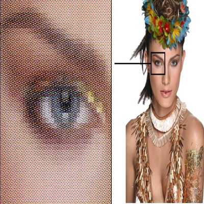
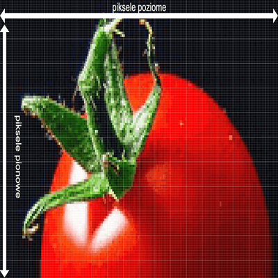
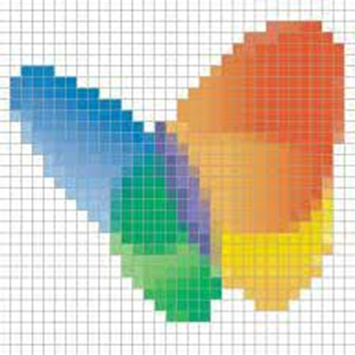

Co to jest grafika rastrowa?
Grafika rastrowa (bitmapowa) to rodzaj grafiki komputerowej, która składa się z siatki pikseli –
małych punktów o określonym kolorze.
Każdy obraz rastrowy ma określoną rozdzielczość (np. 1920x1080), co oznacza
liczbę pikseli w poziomie i pionie. Im wyższa rozdzielczość, tym lepsza jakość obrazu.
Zalety:
1. Idealna do zdjęć i realistycznych obrazów – dobrze odwzorowuje szczegóły i kolory.
2. Szeroka kompatybilność – działa w większości programów i urządzeń.
3. Prostota edycji piksel po pikselu – świetne do retuszu, malowania cyfrowego itp.
Wady:
1. Traci jakość po powiększeniu – obraz robi się rozmazany lub „pikselowaty”.
2. Zajmuje więcej miejsca na dysku – szczególnie przy wysokiej rozdzielczości.
3. Trudniej edytować elementy oddzielnie – nie da się łatwo zmienić np. kształtu jak w wektorze.
Zastosowanie grafiki rastrowej
1. Fotografia cyfrowa
2. Obróbka zdjęć (retusz, filtry)
3. Malowanie i ilustracje cyfrowe
4. Grafika internetowa (banery, tła, miniaturki)
5. Projektowanie gier komputerowych i tekstur
6. Multimedia – wideo, animacje 2D, efekty specjalne
Najpopularniejsze programy:
1. Adobe Photoshop – profesjonalne narzędzie do edycji grafiki rastrowej.
2. GIMP – darmowa alternatywa dla Photoshopa.
3. Krita – świetna do malowania cyfrowego.
4. Paint.NET – lekki program do podstawowej edycji.
5. Procreate – popularny na iPadzie wśród ilustratorów.
6. Corel PHOTO-PAINT – część pakietu CorelDRAW.
7. Pixlr – edytor online do szybkiej obróbki zdjęć.
Typowe rozszerzenia plików rastrowych:
1. .jpg / .jpeg – popularny format zdjęć, kompresowany.
2. .png – wspiera przezroczystość, bezstratny.
3. .gif – animacje i prosta grafika internetowa.
4. .bmp – nieskompresowany, rzadko używany.
5. .tiff / .tif – wysoka jakość, często w druku i skanach.
6. .psd – natywny format Photoshopa, z warstwami.
7. .xcf – natywny format GIMP-a.


